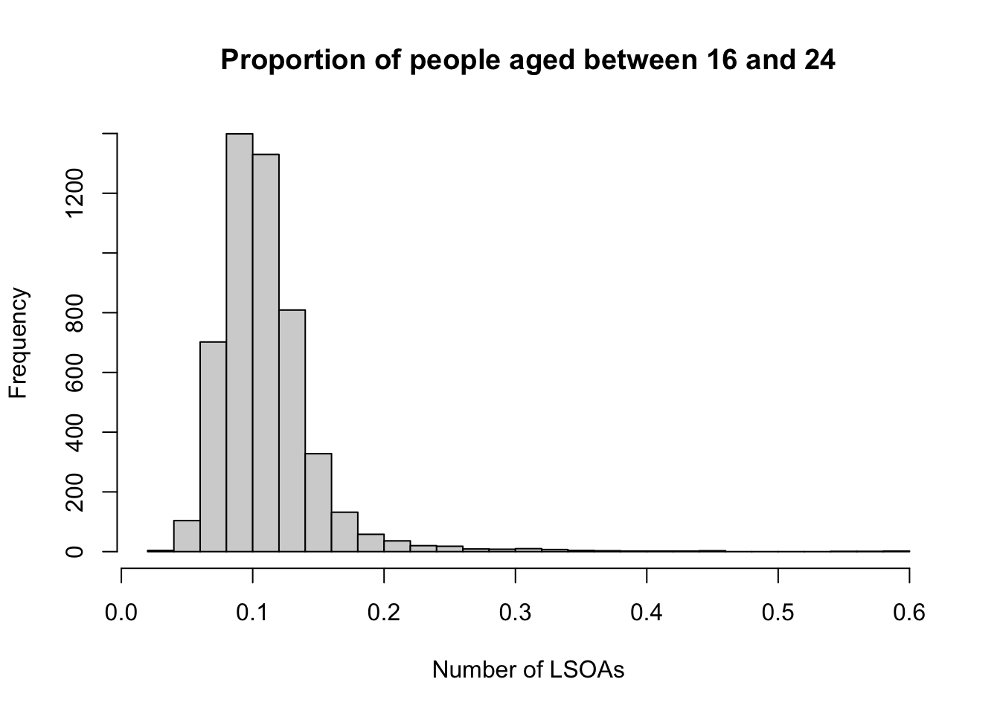
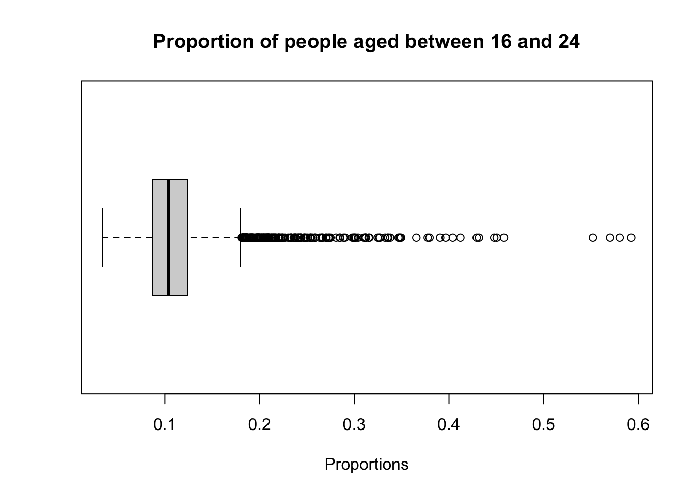

1 R for Data Analysis
This week, we will start easy with a refresher on how to use R and RStudio for working with quantitative data. We will revisit some key concepts introduced in Geography in the Field I and Geography in the Field II, but from next week we will build on these foundations by introducing more advanced statistical techniques.
1.1 Lecture slides
You can download the slides of this week’s lecture here: [Link].
1.2 Reading list
Essential readings
Suggested readings
1.3 Age groups in Camden
In RStudio, scripts allow us to build and save code that can be run repeatedly. We can organise these scripts into RStudio projects, which consolidate all files related to an analysis such as input data, R scripts, results, figures, and more. This organisation helps keep track of all data, input, and output, while enabling us to create standalone scripts for each part of our analysis. Additionally, it simplifies managing directories and filepaths.
Navigate to File -> New Project -> New Directory. Choose a directory name, such as GEOG0018, and select the location on your computer where you want to save this project by clicking on Browse….
Ensure you select an appropriate folder to store your GEOG0018 project. For example, you might use your Methods in Human Geography folder, if you have one, or another location within your Documents directory on your computer.
Please ensure that folder names and file names do not contain spaces or special characters such as * . " / \ [ ] : ; | = , < ? > & $ # ! ' { } ( ). Different operating systems and programming languages deal differently with spaces and special characters and as such including these in your folder names and file names can cause many problems and unexpected errors. As an alternative to using white space you can use an underscore (_) or hyphen (-) if you like.
Click on Create Project. You should now see your main RStudio window switch to this new project and when you check your files pane, you should see a new R Project called GEOG0018.
With the basics covered, let us dive into loading a real dataset, perform some data cleaning, and conducting some exploratory data analysis on the distribution of age groups in Camden. The data covers all usual residents across London, as recorded in the 2021 Census for England and Wales, aggregated at the Lower Super Output Area (LSOA) level.
An LSOA is a geographic unit used in the UK for statistical analysis. It typically represents small areas with populations of around 1,000 to 3,000 people and is designed to ensure consistent data reporting. LSOAs are commonly used to report on census data, deprivation indices, and other socio-economic statistics.
The dataset has been extracted using the Custom Dataset Tool, and you can download the file via the link provided below. Save the files in your project folder under data.
You will have to create a folder named data inside the folder where you saved your RStudio Project.
| File | Type | Link |
|---|---|---|
| London LSOA Census 2021 Age Groups | csv |
Download |
To download a csv file that is hosted on GitHub, click on the Download raw file button on the top right of your screen and it should download directly to your computer.
To get started, let us create our first script. File -> New File -> R Script. Save your script as w06-age-group-analysis.r.
We will start by loading the libraries that we will need:
R code
# load libraries
library(tidyverse)
library(janitor)In RStudio, there are two primary ways to run a script: all at once or by executing individual lines or chunks of code. As a beginner, it is often beneficial to use the line-by-line approach, as it allows you to test your code interactively and catch errors early.
To run line-by-line:
- By clicking: Highlight the line or chunk of code you want to run, then go to Code and select Run selected lines.
- By key commands: Highlight the code, then press
Ctl(orCmdon Mac) +Return.
To run the whole script:
- By clicking: In the scripting window, click Run in the top-right corner and choose Run All.
- By key commands: Press
Option+Ctrl(orCmd) +R.
If a script gets stuck or you realise there is an error in your code, you may need to interrupt R. To do this, go to Session -> Interrupt R. If the interruption does not work, you might need to terminate and restart R.
1.3.1 Data loading
Next, we can load the London-LSOA-AgeGroup.csv file into R.
R code
# load age data
lsoa_age <- read_csv('data/London-LSOA-AgeGroup.csv')Rows: 24970 Columns: 5
── Column specification ────────────────────────────────────────────────────────
Delimiter: ","
chr (3): Lower layer Super Output Areas Code, Lower layer Super Output Areas...
dbl (2): Age (5 categories) Code, Observation
ℹ Use `spec()` to retrieve the full column specification for this data.
ℹ Specify the column types or set `show_col_types = FALSE` to quiet this message.If using a Windows machine, you may need to substitute your forward-slashes (/) with two backslashes (\\) whenever you are dealing with file paths.
Let us have a look at the dataframe:
R code
# inspect number of columns
ncol(lsoa_age)[1] 5# inspect number of rows
nrow(lsoa_age)[1] 24970# inspect data
head(lsoa_age)# A tibble: 6 × 5
Lower layer Super Output Areas…¹ Lower layer Super Ou…² Age (5 categories) C…³
<chr> <chr> <dbl>
1 E01000001 City of London 001A 1
2 E01000001 City of London 001A 2
3 E01000001 City of London 001A 3
4 E01000001 City of London 001A 4
5 E01000001 City of London 001A 5
6 E01000002 City of London 001B 1
# ℹ abbreviated names: ¹`Lower layer Super Output Areas Code`,
# ²`Lower layer Super Output Areas`, ³`Age (5 categories) Code`
# ℹ 2 more variables: `Age (5 categories)` <chr>, Observation <dbl># inspect column names
names(lsoa_age)[1] "Lower layer Super Output Areas Code" "Lower layer Super Output Areas"
[3] "Age (5 categories) Code" "Age (5 categories)"
[5] "Observation" You can further inspect the dataset using the View() function.
To access specific columns or rows in a dataframe, we can use indexing. Indexing refers to the numbering assigned to each element within a data structure, allowing us to precisely select and manipulate data.
To access the first row of a dataframe, you would use dataframe[1, ], and to access the first column, you would use dataframe[, 1]. The comma separates the row and column indices, with the absence of a number indicating all rows or columns.
In R, indexing begins at 1, meaning that the first element of any data structure is accessed with the index [1]. This is different from many other programming languages, such as Python or Java, where indexing typically starts at 0.
R code
# index columns
lsoa_age[ ,1]# A tibble: 24,970 × 1
`Lower layer Super Output Areas Code`
<chr>
1 E01000001
2 E01000001
3 E01000001
4 E01000001
5 E01000001
6 E01000002
7 E01000002
8 E01000002
9 E01000002
10 E01000002
# ℹ 24,960 more rows# index rows
lsoa_age[1, ]# A tibble: 1 × 5
Lower layer Super Output Areas…¹ Lower layer Super Ou…² Age (5 categories) C…³
<chr> <chr> <dbl>
1 E01000001 City of London 001A 1
# ℹ abbreviated names: ¹`Lower layer Super Output Areas Code`,
# ²`Lower layer Super Output Areas`, ³`Age (5 categories) Code`
# ℹ 2 more variables: `Age (5 categories)` <chr>, Observation <dbl># index cell
lsoa_age[1,1]# A tibble: 1 × 1
`Lower layer Super Output Areas Code`
<chr>
1 E01000001 Alternatively, you can access the data within individual columns by referring to their names using the $ operator. This allows you to easily extract and work with a specific column without needing to know its position in the dataframe. For example, if your dataframe is named dataframe and you want to access a column named age, you would use dataframe$age. This method is especially useful when your data has many columns or when the column positions may change.
1.3.2 Data manipulation
Because all the data are stored in long format, we need to transform the data to a wide format. This means that instead of having multiple rows for an LSOA showing counts for different age groups, all the information for each LSOA will be consolidated into a single row. We will further clean up the column names with the janitor package to make them easier to work with.
We can do this as follows:
R code
# clean names
lsoa_age <- lsoa_age |>
clean_names()
# pivot wider
lsoa_age <- lsoa_age |>
pivot_wider(id_cols = c('lower_layer_super_output_areas_code', 'lower_layer_super_output_areas'),
names_from = 'age_5_categories',
values_from = 'observation')
# clean names
lsoa_age <- lsoa_age |>
clean_names()If your clean_names() function returns an error, it is likely due to a conflict with another library that also includes a clean_names() function. In such cases, R cannot determine which one to use. To resolve this, you can specify the library explicitly by using janitor::clean_names().
The code above uses a pipe function: |>. The pipe operator allows you to pass the output of one function directly into the next, streamlining your code. While it might be a bit confusing at first, you will find that it makes your code faster to write and easier to read. More importantly, it reduces the need to create multiple intermediate variables to store outputs.
You can further inspect the results using the View() function.
A common issue with data tied to spatial units, such as Lower Super Output Areas (LSOAs), often vary in size, meaning some areas will have more residents than others. This variation makes it challenging to compare absolute counts fairly across different areas. To address this, we can first sum the counts across all age groups to get the total number of residents in each LSOA, and then calculate the proportion of people within each age group by dividing the counts by the total number of people in each LSOA.
R code
# calculate total population
lsoa_age <- lsoa_age |>
rowwise() |>
mutate(lsoa_pop = sum(across(3:7)))
# calculate proportions
lsoa_age <- lsoa_age |>
mutate(across(3:7, ~./lsoa_pop))You can further inspect the results using the View() function.
1.3.3 Data exploration
Now that we have loaded and inspected our data, we can start by analysing its distribution. We will begin by examining the proportion of people aged 16 to 24 across London, using basic descriptive statistics such as the mean, median, and range. These measures will give us an idea of the central tendency and spread of the data.
R code
# mean
mean(lsoa_age$aged_16_to_24_years)[1] 0.1101321# median
median(lsoa_age$aged_16_to_24_years)[1] 0.1036368# range
range(lsoa_age$aged_16_to_24_years)[1] 0.03403141 0.59242902# summary
summary(lsoa_age$aged_16_to_24_years) Min. 1st Qu. Median Mean 3rd Qu. Max.
0.03403 0.08679 0.10364 0.11013 0.12420 0.59243 Further to these standard descriptive statistics, graphs provide a useful visual summary of the distribution of values on a variable. Graphs can help us assess, for instance, whether it our data are normally distributed, whether there are outlying values, and whether there are any missing values or errors we should deal with before running our analyses. Histograms are a good first step when it comes to looking at the distribution of values of a variable.
We can create a histogram as follows:
R code
# histogram
hist(lsoa_age$aged_16_to_24_years, breaks = 30, xlab = 'Proportions', main = 'Proportion of people aged between 16 and 24')
A histogram is particularly useful for checking whether a variable is normally distributed because it visually displays the frequency of data points across different intervals. In a normal distribution, the histogram will show a symmetric bell-shaped curve, with most data points clustering around the mean and fewer points in the tails.
Boxplots provide another method for examining the distribution of values in a continuous variable. The box itself represents the interquartile range (IQR), bounded by the lower quartile (Q1) and upper quartile (Q3), with the median displayed as a line inside the box. The whiskers extend 1.5 times the IQR above Q3 and below Q1, indicating the range within which most of the data lies, while any points outside this range are plotted as outliers.
A boxplot can be created as follows:
R code
# boxplot
boxplot(lsoa_age$aged_16_to_24_years, horizontal = TRUE,
xlab = 'Proportions',
main = 'Proportion of people aged between 16 and 24')
1.3.4 Data filtering
So far we have only looked at the dataset for London as a whole. So, let us zoom in to Camden by filtering our dataset:
R code
# filter out camden
lsoa_age_camden <- lsoa_age |>
filter(str_detect(lower_layer_super_output_areas, 'Camden'))
# inspect
head(lsoa_age_camden)# A tibble: 6 × 8
# Rowwise:
lower_layer_super_output_areas…¹ lower_layer_super_ou…² aged_15_years_and_un…³
<chr> <chr> <dbl>
1 E01000842 Camden 011A 0.147
2 E01000843 Camden 014A 0.129
3 E01000844 Camden 011B 0.191
4 E01000845 Camden 014B 0.177
5 E01000846 Camden 014C 0.209
6 E01000847 Camden 014D 0.191
# ℹ abbreviated names: ¹lower_layer_super_output_areas_code,
# ²lower_layer_super_output_areas, ³aged_15_years_and_under
# ℹ 5 more variables: aged_16_to_24_years <dbl>, aged_25_to_34_years <dbl>,
# aged_35_to_49_years <dbl>, aged_50_years_and_over <dbl>, lsoa_pop <dbl>The str_detect() function searches for a substring within a larger string and returns a logical value indicating whether the searched text is present. In turn, te filter() function uses this to subset the dataset.
You can further inspect the results using the View() function.
We can save this dataset so that we can easily load it the next time we want to work with this by writing it to a csv file.
R code
# write data
write_csv(x = lsoa_age_camden, file = 'data/Camden-LSOA-AgeGroup.csv')1.4 Homework task
This concludes this week’s tutorial. Now complete the following homework tasks:
- Filter the London LSOAs to any of the London boroughs other than Camden.
- For your selected borough, create either a histogram or a boxplot visualising the distribution of the proportion of people aged 25 to 34 years. Make sure to give your plot a clear title and label the axes appropriately.
- Save your visualisation as an image.
Paste your visualisation output in the appendix of your assignment, include a few sentences interpreting the results.
1.5 Before you leave
This week, we revisited the basics of conducting quantitative analysis in R and RStudio, building on the material introduced last year in Geography in the Field I and Geography in the Field II. Now that everyone is back up to speed, next week we will move on to using R for statistical analysis. But for now, it is time to kick back and relax!